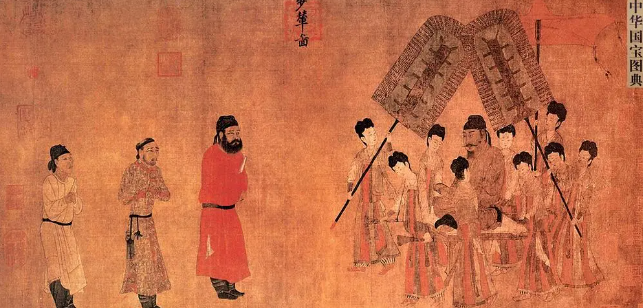
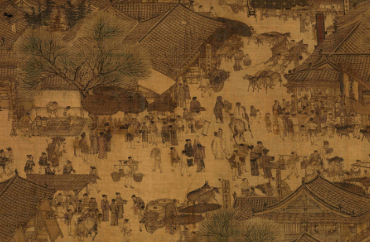
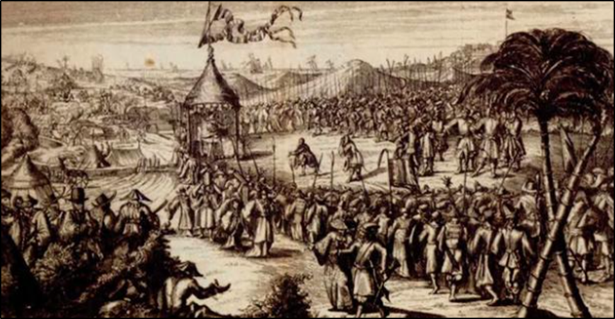
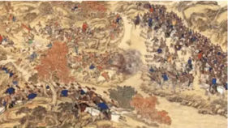

2024年北京中考历史 第9题 解析
9. 某班举办反抗外来侵略专题展，其中有倭寇图卷、林则徐虎门销烟池遗址、北洋水师致远舰等图片。以下图片可以入选这一专题的是（ ）
 |  |  |  |
A.步辇图（局部） | B.清明上河图（局部） | C 荷兰军队向郑成功投降图（局部） 荷兰军队向郑成功投降图（局部） | D.清军平定大、小和卓叛乱图（局部） |
A. AB. BC. CD. D
【答案】C
【解析】
【详解】根据所学知识可知，“荷兰军队向郑成功投降图（局部）”与郑成功收复台湾相关，反映的是抗击外来侵略，与题干反抗外来侵略相符，C项正确；“步辇图（局部）”反映的是唐朝和吐蕃的的民族关系，与题干反抗外来侵略不符，排除A项；“清明上河图（局部）”反映的是北宋都城东京繁荣的景象，与题干反抗外来侵略不符，排除B项；“清军平定大、小和卓叛乱图（局部）”反映的是清朝时期平定大、小和卓叛乱叛乱的史实，与题干反抗外来侵略不符，排除D项。故选C项。